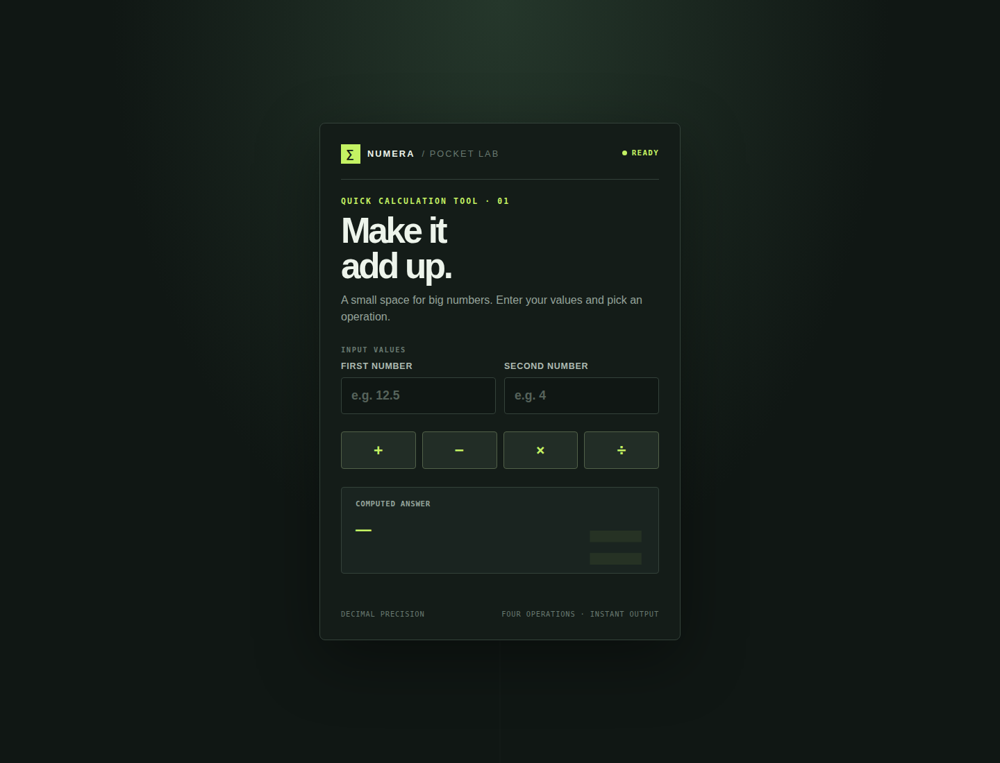

CSE 816 · Software Production Engineering · Mini Project
A Java and Spring Boot calculator packaged as a container and deployed with Docker Compose, with Jenkins pipeline configuration for automated build and delivery.
The service provides addition, subtraction, multiplication, and division through REST endpoints. It accepts decimal operands, returns a JSON result, rejects missing or invalid parameters with structured HTTP 400 errors, and exposes Spring Actuator health status.
The deployment uses two Compose services. The calculator runs on the private Compose network; Nginx provides the browser and API entry point. Both services have health checks and restart policies. The application image uses a Maven build stage and a smaller Java runtime stage, runs as a non-root user, and exposes port 8081 inside the container.
http://localhost:8083. The health endpoint returned {"status":"UP"}; the add endpoint returned a result of 5 for 2 + 3.The pipeline and deployment are configured in the project files. A successful Jenkins execution and external service configuration must be demonstrated separately; this report does not claim a completed Jenkins run.
Implementation
| Stage | What the project configures |
|---|---|
| Checkout | Checks out the revision supplied by the Jenkins multibranch job. |
| Build | Runs Maven clean package with tests skipped in this stage. |
| Test | Runs Maven tests and publishes Surefire JUnit XML reports. |
| Package | Packages the executable JAR and archives it in Jenkins. |
| Docker Build | Builds a branch/build-number tagged calculator image and the Nginx proxy image. |
| Push | On the main branch, authenticates with Jenkins-managed credentials and pushes the versioned and latest Docker Hub tags. |
| Deploy | On main, deploys through Compose and waits for service health checks. |
| Notifications | Jenkins post actions send success/failure email through the configured Email Extension settings. |
Compose health and API responses were captured from the running local stack. The UI screenshot below shows the calculator page served through the Nginx proxy.

See docs/evidence/local-verification.txt for the recorded health response, sample API response, and Compose service status. The service test file covers all four arithmetic operations and divide-by-zero; the MVC test covers API responses and the frontend. Its page-heading assertion was updated to match the current UI. Tests were not rerun while preparing this report.
Review and handoff
The frontend was redesigned after the original integration test had been written. That left an obsolete assertion expecting the old “Calculator” heading. The assertion has now been aligned with the current “Make it add up.” heading. The local Compose proxy also could not use its default host port 8082, so this verification used port 8083.
| Item | Current evidence/status |
|---|---|
| GitHub repository and collaboration history | This local checkout currently has no commits or Git remote. Publish to the student’s repository and add progressive commits, a feature branch, and a merged pull request. |
| Jenkins run and trigger | Jenkinsfile and Jenkins Compose configuration are present. Configure the Jenkins job and GitHub webhook (or Poll SCM), then capture a successful run showing the stages. |
| Docker Hub image | The README names certifiedUnc/spe-calculator and the pipeline has push steps. Confirm the image is publicly available after an authenticated push. |
| Email proof | The Jenkinsfile has success/failure notification steps. Configure SMTP and Jenkins credentials, run the job, and capture the received notification. |
| Live demo | Demonstrate a GitHub push triggering an automatic build and deployment during the course review. |
The application, container build, two-service Compose deployment, and declarative Jenkins pipeline configuration are in place. The local stack has been observed healthy and the API responds as expected. The final delivery still depends on publishing the repository and image, configuring Jenkins integrations, running the pipeline, and collecting the required account-level evidence.
mvn clean test, confirm all tests pass, execute the Jenkins pipeline against GitHub, verify Docker Hub and email delivery, and save the Jenkins/email/container/API evidence screenshots.